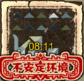
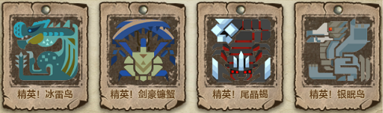
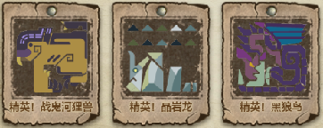
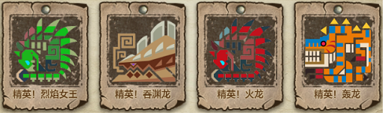
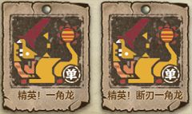
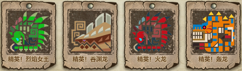
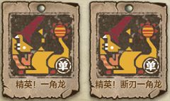

You can only undertake 2 bounties per day.
Try not to do a bounty mission before hitting your exp cap if you're below 15, you might have quests that asks you to do a bounty mission.
One ticket is used up every time you enter a hunting ground, 2 for HR grounds.
You start off with 10, the maximum you can hold at a time is 30.
You get 10 tickets daily at daily reset, which will not go over 30 if you have more than 20 tickets at the end of the day.
You have 20 reserve tickets, which can be redeemed at anytime by clicking on the ticket icon in the UI.
Reserve tickets are replenished every Thursday also at daily reset time.
You can go over the max of 30 tickets if you use a Ticket Token (white coin with a helm symbol).
You can buy these ticket tokens at the female merchant with the white mask. (Up to 6)
Also occasionally at the guild merchant when he stocks them. (2 per day)
Story quests will take up most of your time on your journey to 40, and they replenish any ticket you use too.
Some gift bags/presents give you ticket tokens as well.
Unstable hunts will have a red image over your monster and a timer.
There will be a secondary objective when you start that is optional. If you want to get credit for the optional part you need to do that first since the quest will finish when you kill the main monster.
Each unlock costs 25 rank one documents
 Each unlock costs 30 rank two documents
 


